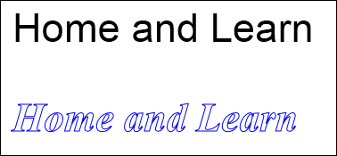

Add Text to the HTML5 Canvas
Ongoing HTML5 Canvas Tutorial: 1 2 3 4 5 6 7 8 9 10 11 12 13 14 15
You can add text to a HTML5 canvas. This can either be as filled letters or stroked ones. The two methods you need are:
fillText
strokeText
In between the round brackets of both you need some text between quote marks, an X position and a Y position:
fillText( "Home and Learn", 20, 100 );
strokeText ("Home and Learn", 20, 200 );
The three arguments are separated by commas.
To go with the two text methods, you can specify a font. This is done with the FONT property:
canvas_context.font = "34pt Arial";
To the right of the equal sign you can keep things simple and just specify a font size in points (pt) and the name of a font (separate the two with a space). Or you can add italics and a font weight:
canvas_context.font = "Bold 34pt
Arial";
canvas_context.font = "Italic Bold 34pt Arial";
You can also specify what generic font to use if your visitor does not have your named font on his/her computer. This should go after a comma:
canvas_context.font = "Italic Bold 34pt Arial, sans-serif";
You should definitely add serif or sans-serif if you're going to be using a fancy font. This is because it's the user's system that will dictate which font will appear - if it's not on you user's PC then he or she won't see it, you'll just get a default font (probably a 10 point sans-serif).
Here's some code to try out:
canvas_context.fillStyle = "black";
canvas_context.font = "34pt Arial";
canvas_context.fillText("Home and Learn", 20, 100);
Change the font to something else. To see what happens. Try different fill styles (you can also use a pattern or a gradient for the fills).
The code for a stroke style type of font is very similar:
canvas_context.strokeStyle = "blue";
canvas_context.font = "Italic Bold 34pt Times, serif";
canvas_context.strokeText("Home and Learn", 20, 200);
The two together look like this in a browser:

In the next part, we'll take a look at text alignment.